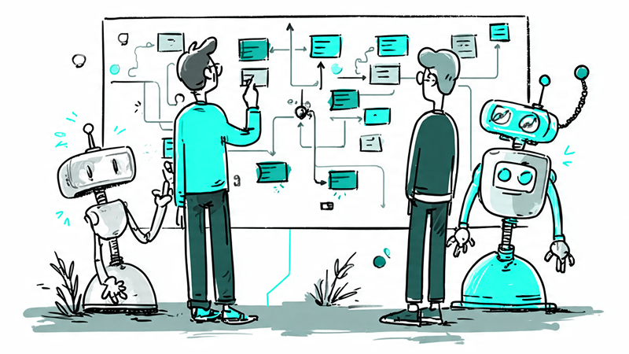

MAR 06, 2026
AI Has Replaced Half the Designer's Job. Here's Which Half.
Summary: A senior designer's honest inventory of what AI has taken over - and what it reveals about where design value actually lives now.

The question isn't whether AI belongs in your workflow. It's whether you've caught up yet.
The most expensive thing a senior designer does is write a discussion guide. Not because it's hard, but because it costs about £75 an hour in attention and takes two hours. AI does it in under four minutes.
Last April I caught myself spending a Tuesday afternoon on a research report that ChatGPT drafted in the time it took me to make a coffee. That was the moment I started keeping a list.
Over the past year I've kept a running inventory of tasks I've stopped doing myself - not because I lost the skill, but because it stopped making sense for me to be the one doing them. The list is longer than I expected. And what it reveals isn't just about tools. It's about where design value actually lives now.
The Tasks That Moved to AI
Research and synthesis went first. Discussion guides, interview synthesis, affinity mapping, research reports, competitive analyses, persona write-ups. These used to represent a full week of a project. Now they're a morning - and the morning is mostly editing, not writing.
On my typical research round of four to five interviews, transcripts go straight to AI for note synthesis and thematic analysis. That used to be at least two days. It's now a focused hour of reviewing and challenging the output.
UX copy and microcopy followed. I no longer write button labels, error messages, or onboarding copy from scratch. I prompt for ten variants and make a judgment call. The craft hasn't disappeared - it's just moved from a blank page to an editorial decision.
Documentation and handoff came next. Component documentation, design specs, user stories, acceptance criteria, workshop synthesis - AI drafts all of it. I review, correct, and add the decisions that required context that a language model couldn't have.
Stakeholder communication is now almost entirely AI-assisted - first drafts of decks, rationale documents, status updates. I still make the argument. I no longer build the scaffold.
The proximity problem is where this gets interesting. After weeks inside a problem, you lose the ability to see it the way a stakeholder does - someone who needs the headline, not the journey. I've started using AI not just to draft the communication, but to re-synthesise the entire body of work from scratch, as if it knows nothing about the process. What comes back is closer to what a stakeholder actually needs and cares about than what I'd have written myself. Being too close to the work is a well-known design problem. It turns out AI is a useful way out of it.
What This Costs You If You're Still Doing It Manually
This isn't a productivity observation. It's a commercial one.
If a senior designer bills at £400–£600 per day and spends about 40% of their time on tasks AI can now handle, that's roughly £160–£240 of day-rate work that no longer requires senior-rate thinking. For a studio or in-house team that compounds quickly.
On one 6-week project last year, I estimated I reclaimed roughly 5 days of billable-equivalent time by shifting synthesis and documentation to AI. That's not nothing.
For business owners and operations leaders reading this: if your design team hasn't revisited how they're working in the last 12 months, you're likely paying senior rates for tasks that have been automated. That's worth a conversation.
Production Speed Is No Longer a Differentiator
The work didn't disappear. It relocated.
Before AI, design expertise showed up in production - the volume and quality of what you made. A senior designer was someone who could produce better artefacts faster than a junior.
That signal is gone. Production speed is no longer a differentiator.
What matters now is the layer above and below the artefact. Above: defining the right problem, framing the brief, and knowing which question to ask before any research starts. Below: judging whether the output is actually good - not just functional, but right for the context and the organisation.
This is not a soft skill. It's a harder skill than it used to be, because the bar for what counts as a good judgment call has moved. You're no longer judged on whether you can make the thing. You're judged on whether you knew what to make, and whether you can tell when it's done.
The Skills AI Can't Automate - Yet
To be precise, because this matters:
AI cannot define the right problem. It can explore a problem space you describe, but it doesn't know which problem is worth solving, or why the last attempt to solve it failed.
It cannot read a room. It doesn't notice when the CFO checked out, or when a product lead disagrees but won't say so in a group setting. It can't build the trust that makes people tell you the real thing you need to know and understand.
It cannot navigate organisational politics. It doesn't know that the reason the last redesign failed had nothing to do with the design.
I worked with one organisation where the stated brief was a redesign. The actual problem was a lack of alignment between core stakeholders. No AI would have surfaced that from a project brief.
It cannot make the judgment call that comes from watching things succeed and fail for a decade. That pattern recognition - when something looks right but will land wrong - is still ours. For now.
Stop Working at the Rate AI Should Be Billing
If you're a senior designer and you're still spending the majority of your time on production - writing copy, building decks, synthesising notes, crafting documentation - you're working below your new market rate.
Not because those things don't matter. But because you should be spending that time on the problems AI can't solve, while using AI to clear the path to them.
My adjustment isn't really about tools. It's about permission to let go of the idea that producing the work is the same as doing the work. I follow what's changing, but I don't chase every new release. When a specific task feels slower than it should, that's when I go looking. Curiosity on demand, not anxiety.
I've put together a practical checklist - 16 tasks, five categories - that lets you audit where you are right now. For each item you're not yet doing, it shows you exactly what to change and which tools to start with.
Run the audit: Am I using AI where it matters?
If this is the kind of thinking you want in your inbox, I write about design practice, AI, and what it means to do this work well in Clear by Design - just things I've actually worked out.